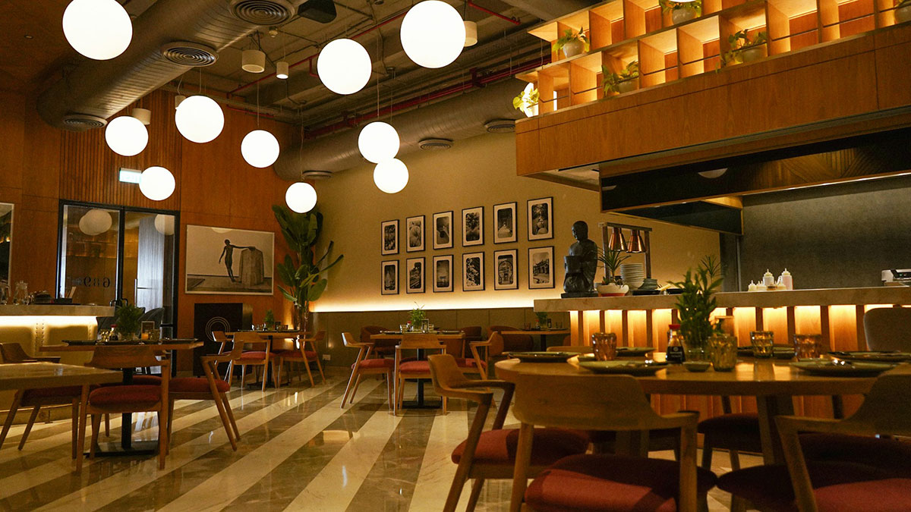

About Us
Welcome to The Bistro Cafe, where passion for great coffee meets the art of exceptional dining.

Our story began with a simple idea: to create a space where people could come together to enjoy exceptional food and drink. What started as a small café has grown into a beloved community hub, known for our commitment to quality, sustainability, and creating memorable experiences.
At The Bistro Cafe, we source our ingredients from local farmers and artisans, ensuring that every dish is fresh, flavorful, and responsibly produced. Our menu features a variety of options to suit every palate, from hearty breakfast fare to gourmet lunch and dinner selections.